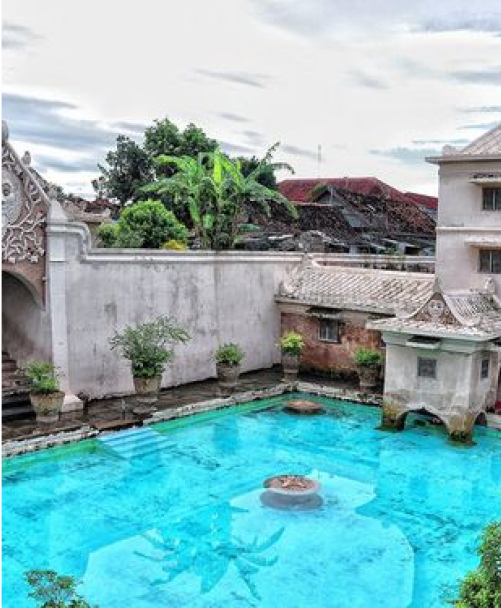

Kraton Ngayogyakarta Hadiningrat
Kraton Ngayogyakarta
Hadiningrat
4.9 (59.523)
Buka Pukul 08.30 - 14.30

Taman Sari
Alun-Alun Kidul
Masjid Gedhe Kauman
Buka Pukul 09.00 - 15.00
Buka 24 Jam
4.8 (53.129)
4.4 (21.932)
4.8 (10.438)

Buka 24 Jam